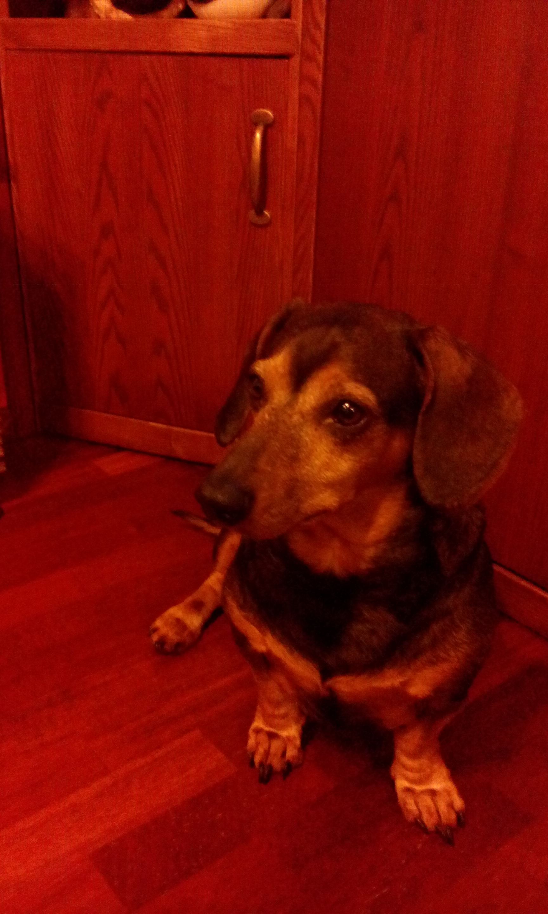

"Pies jest jedynym stworzeniem na ziemi, które kocha cię więcej niż siebie samego" John Billings
Mój pies nazywa się Net bo jest szybki, bezprzewodowy i często się zawiesza. Jest jamniorem krótkowłosym. Pochodzi z Wołomina i ma ostry charakter.
A tak wygląda.

Jak widać jest już starszym panem, ma 10 lat.
Lubi:
- Wędzone uszy wieprzowe
- Duże czarne labradorki
- Spanie
- Oglądanie telewizji
- Świeżą zieloną trawkę
- Pieszczoty
HISTORIA STWORZENIA ŚWIATA Z PUNKTU WIDZENIA JAMNIKA
1. Pierwszego dnia Bóg stworzył Jamnika.
2. Drugiego dnia Bóg stworzył człowieka, żeby rozpieszczał Jamnika.
3. Trzeciego dnia Bóg stworzył wszystkie zwierzęta, aby Jamnik miał za czym biegać.
4. Czwartego dnia Bóg stworzył pracę, żeby człowiek wychodził regularnie z domu, a Jamnik mógł swobodnie po nim buszować.
5. Piątego dnia Bóg stworzył piłkę tenisową, żeby Jamnik mógł ją aportować albo i nie.
6. Szóstego dnia Bóg stworzył weterynarza, żeby Jamnik był zdrowy, a człowiek ubogi.
7. Siódmego dnia Bóg chciał odpocząć, ale musiał wziąć Jamnika na spacer.